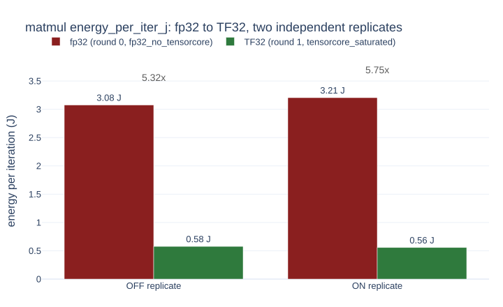
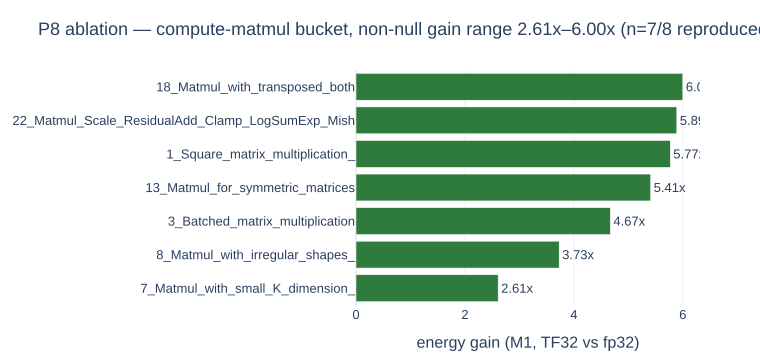

A compiler-optimization loop that judges GPU kernel transformations by simulated hotspot ΔT (K) from an RC thermal model, not latency or raw energy — the same measurement-driven rule engine as the sibling latency-axis project, with the objective swapped.

rules.py, evolver.py, ledger.py are unchanged from
gpu-solver-loop — only harness._metric(mode="thermal") changed, from -latency
to -energy_per_iter_j. A second, independent axis converts the same measured power into
a hotspot ΔT (K) via a two-node RC model, cross-checked against Ansys Twin Builder.
Same matmul measurement (fp32 → TF32, A100), same RC model — only the assumed
duty cycle changes. Points below are the RC model evaluated directly at each duty value
(thermal_loop/report_p4_deltat.py::_scenario_b), not a fitted or hand-drawn curve.
two independent replicate runs of the same round-0→round-1 sequence (evolution OFF / ON), matmul, A100

Same two-round sequence run twice (OFF/ON refer to the evolver, not two different kernels) — gain is computed within each replicate, not across them. 5.32× and 5.75×, both real A100 measurements. This is the input the 17.16 K hotspot number above is derived from.
KernelBench-derived 35-problem stratified sample, v3 pre-registered criterion

7 of 8 compute-matmul problems show a real, non-null TF32 energy gain (bucket reclassification, v4); at the original pre-registered criterion across all compute-bound buckets, v3 reproduction is 40% — reported alongside, not replaced. Memory-bound problems correctly show 100% null (no false gain claimed).
6-system survey; no prior system couples a compiler decision to a simulated physical temperature
| System | Judged quantity | Rule/decision feedback loop |
|---|---|---|
| Zhang et al. 2024 (energy-aware kernel gen) | Energy (J) | No — static cost model |
| KernelPro | Latency, energy (tiebreak) | No — LLM-judged classification |
| FlipFlop | Power/energy (static estimate) | No — static analysis |
| Zeus | Energy (J), via NVML | No — power-cap tuning |
| GPOEO | Energy, DVFS setpoint | No — online frequency search |
| LPTN / Twin Builder thermal-ROM | Temperature (°C) | N/A — never coupled to a compiler loop |
| This project | Simulated hotspot ΔT (K), via RC model | Yes — same rule/evolver/ledger as gpu-solver-loop |
Full survey and citations: README §2.